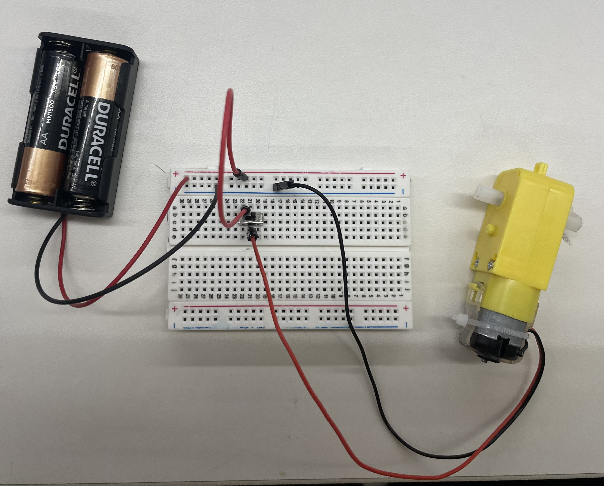
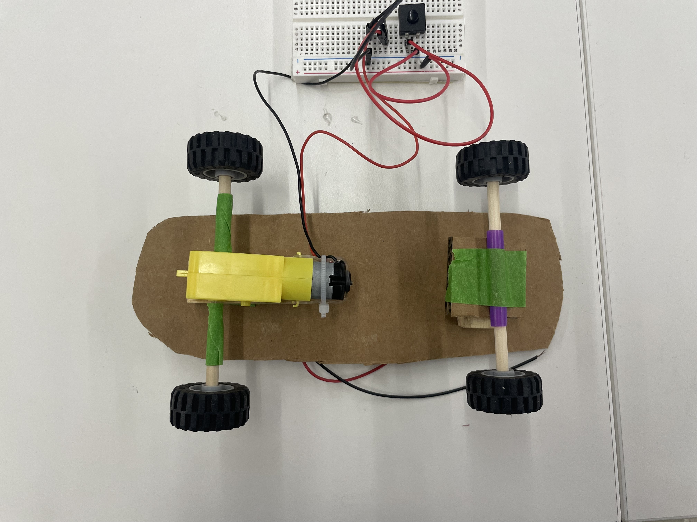
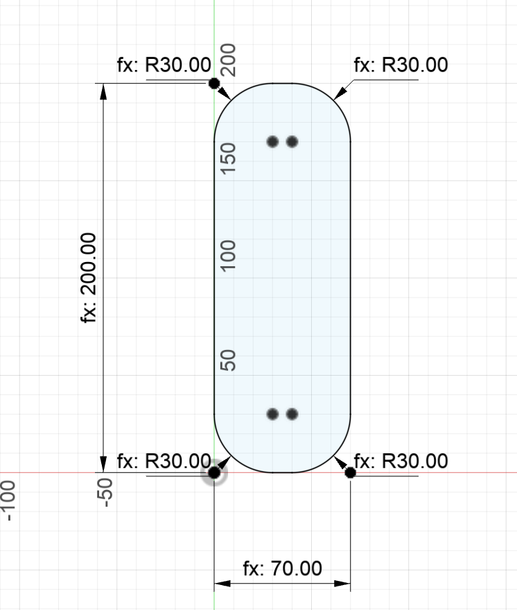
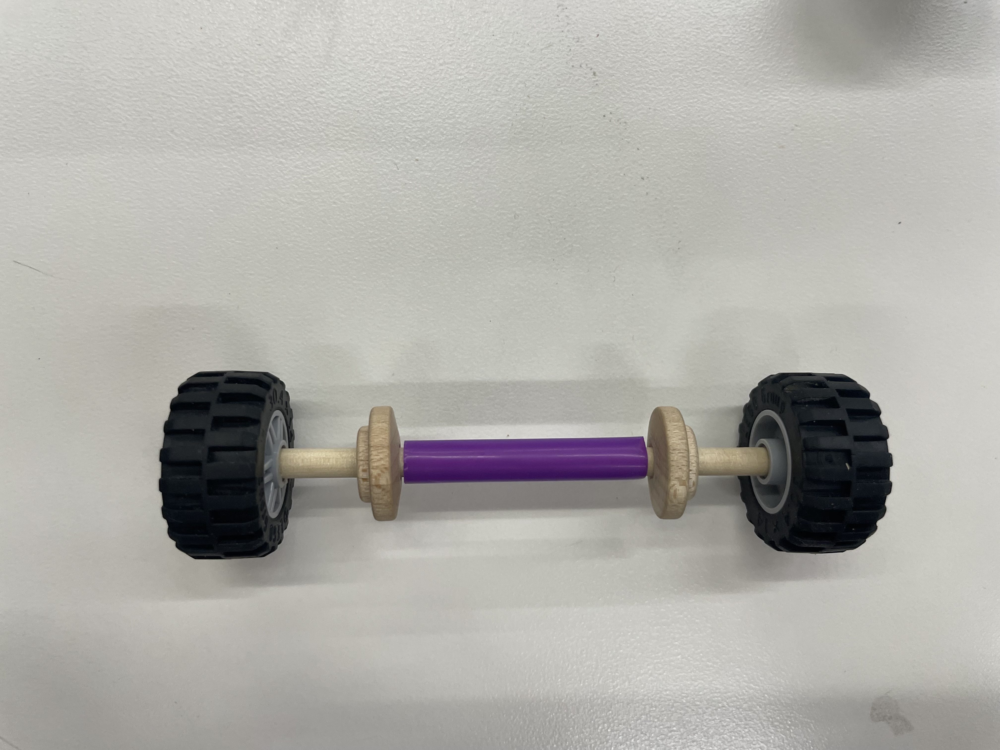
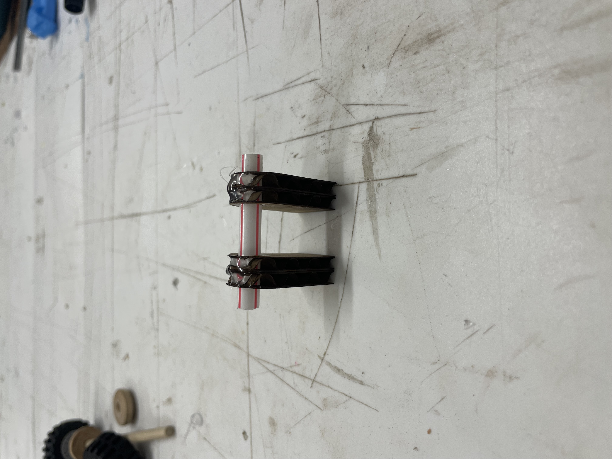

<div class="textcontainer">
<p class="margin"> </p>
<h4>Assignment 1: Press-Fit Construction</h4><br>
<h4><b>idea: mini skateboard</b></h4>
<h5><em>Materials and equipment</em></h5>
<p>Fusion 360<br>
cardboard<br>
laser cutter<br>
wooden dowel (4.5 mm diameter, 30.5 cm length)<br>
tiny saw (to cut dowel)<br>
4 lego tires<br>
1 plastic straw (0.25 in diameter)<br>
2 small heatshrink tubes<br>
2 wooden disks<br>
dc electric motor 3V-6V with gearbox and dual shafts<br>
tactile switch button<br>
battery pack for 2x 1.5V batteries<br>
2x 1.5V batteries<br>
wires to connect circuit components<br>
hot glue<br>
solder<br>
<h5><em>the process</em></h5>
<p class="margin"> </p>
I wanted to make a tiny skateboard since one of my final project ideas is a skateboard. Since we just needed a simple circuit with a motor to fulfill the assignment (and I had a thesis draft due this week), I decided to make a skateboard version of <a href="https://www.youtube.com/watch?app=desktop&v=qymG8w4ZIpE">these</a> <a href="https://www.youtube.com/watch?v=2w-eism6Z00">simple circuit cars</a> from youtube (a la middle school science fair). <br>
I watched both those videos and got straight to rapid prototyping. First, I made my circuit on the breadboard using the motor, batteries, and button. I skipped Fusion and went straight to assembling the following taped together design to make sure everything fit together for the glued together design:
<p class="margin"></p>
<div class="flexrow">


<img src="./side skateboard.jpeg" alt="side view of skateboard with circuit on top in front of laptop" width=25%></div>
<br>
<p class="margin"></p>
Here it is in action:<br>
<div class="flexrow">
<video width="50%" autoplay muted>
<source src="iteration1.MOV" type="video/mp4">
</video>
</div>
</body>
<br>
<h4>iteration 2</h4>
<p class="margin"> </p>
Now that I had a working prototype, I made the slightly more polished version.<br>
<br>
<h5>the deck</h5>
I designed a <a href="./skateboard fr v1.dxf" download>very simple rectangle with rounded corners in Fusion</a> and laser cut it.<br>
<p class="margin"></p>
<div class="flexrow">
</div>
<br>
<h5>the circuit</h5>
<p class="margin"></p>
<div class="flexrow">
<img src="./soldered.jpeg" alt="simple circuit soldered together (motor, battery pack, button)" width=25%>
</div>
<p class="caption">Soldered my circuit together, connecting the battery to the button, button to the motor, and motor to the ground of the battery</p>
<h5>the trucks</h5>
<p class="margin"></p>
The trucks are the assembly on a skateboard that mounts the axels and wheels to the deck. For the front/nonmotorized wheels, I designed and laser cut a holder for the axel out of cardboard which was just big enough to securely hold the 0.25 in straw. I cut the dowel to ~10cm and put it throught the mount component for the axel. I put the wooden disks on the axel on each side of the straw to keep the front wheels from wobbling too much. The lego wheels were a perfect fit to go at the ends of the axel!<br>
The back motorized wheels were a bit easier to assemble. I cut ~3cm of the dowel and used heat shrink to secure it to each of the shafts on the motor's gearbox, then hot glued the motor to a small block so the wheels would be level to the front wheels.
<p class="margin"></p>
<div class="flexrow">


<img src="./underside w circuit.jpeg" alt="underside of mini skateboard with wheels/trucks and circuit" width=25%>
</div>
<br>
<h5>assembly and finishing touches</h5>
<p class="margin"></p>
I hot glued everything together! I put the ciruit on the bottom and taped the button to the side of the battery pack. To make it look more like a skateboard, I cut out piece of sandpaper and glued it to the top to act as the grip. It looks amazing!! It's almost true to real life except you couldn't do an ollie on it (even if you were tiny) because the ends of the deck are flat instead of curved up.
<div class="flexrow">
<video width="50%" autoplay muted>
<source src="iteration2.MOV" type="video/mp4">
</video>
</div>
</body>
</div>